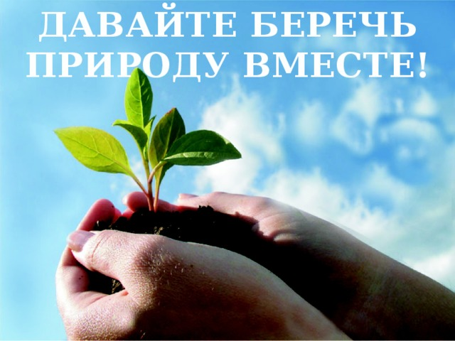

!Экологические кризисы!
Home
Exit
Vidio
Экологические кризисы в истории человечества.
Первый экологический кризис. Самые крупные травоядные животные — мамонт, волосатый носорог, дикая лошадь, а также крупные хищники — пещерный медведь, пещерный лев, саблезубая дикая кошка — исчезли к концу последнего оледенения, т. е. 10 — 20 тыс. лет назад. Наиболее поздняя находка останков мамонта относится к VII тысячелетию до н. э., а останки большеротого оленя — к XVIII — X тысячелетию до н. э. Сторонники гипотезы об истреблении человеком-охотником крупных животных так называемой «мамонтовой фауны» считают это явление первым экологическим кризисом на планете, или кризисом консументов (от лат. consumo — потребитель). Если даже предположить, что первобытный охотник и был истребителем «мамонтовой фауны», то все равно это не могло привести к экологическому кризису. Скорее, это был «продовольственный» кризис для тех групп охотников, которые специализировались на крупных травоядных животных. Сейчас хорошо известно, что древние охотники меняли «профиль» охоты: переходили от одних видов животных к другим. Следовательно, после естественного вымирания «мамонтовой фауны» не было и «продовольственного» кризиса, просто первобытные люди стали охотиться на животных среднего размера.
Определённые противоречия во взаимодействии общества с природой неизбежны. Прогресс общества идёт за счёт природы, ибо, удовлетворяя свои потребности, люди заимствуют у природной среды материальные блага. Однако если общество существует за счёт природы, его прогрессивное развитие может быть бесконечным только при условии бесконечности и разнообразия природной среды. Но поскольку общество развивается на ограниченном по объёму пространстве, каким является наша планета, то оно неизбежно на определённом этапе сталкивается с экологической проблемой. Эта проблема обусловлена возрастанием противоречий во взаимоотношениях общества и природы, что в конечном счёте приводит к экологическим кризисам в биосфере. Экологический кризис – это изменение биосферы или её частей на значительном пространстве, сопровождающееся изменением среды и экосистем в целом в новое качество. В биосфере неоднократно происходили кризисные явления и до появления человека, вызванные изменениями климата и сопутствующими им оледенениями либо опустыниванием. Согласно периодизации Н.Ф. Реймерса (табл. 5) последний доантропогенный кризис произошёл примерно 3 млн лет назад. Он был связан с резким иссушением суши, что привело к появлению на месте лесов степей и саванн и возникновению прямоходящих антропоидов.
Причины экологического кризиса
Во многом происходящие негативные процессы в природе связаны с рядом причин:
из-за политической обстановки в мире, когда Запад пытается удерживать в своих руках все мировые запасы, в том числе путем войн и гражданских революций;
из-за несовершенного законодательства, которое не всегда учитывает интересы окружающей среды;
растущая коррупция в высших эшелонах власти, которые за деньги готовы с молотка продавать все, что только возможно и доступно в их руках;
нехватка квалифицированных специалистов в области охраны окружающей среды, например, экологов, агрономов, служащих лесоохраны;
Ит.д

За внимание спасибо!!!!